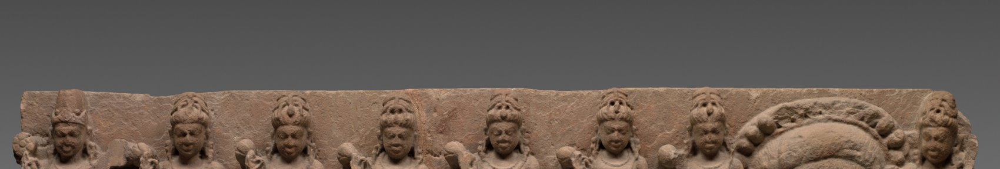
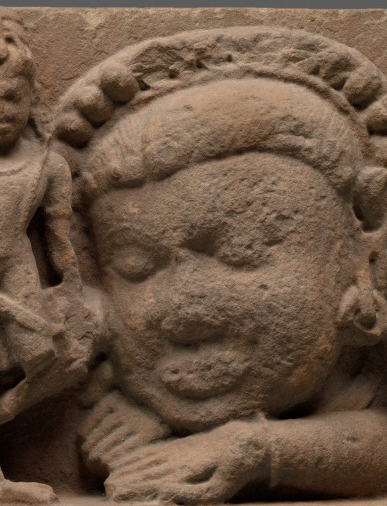
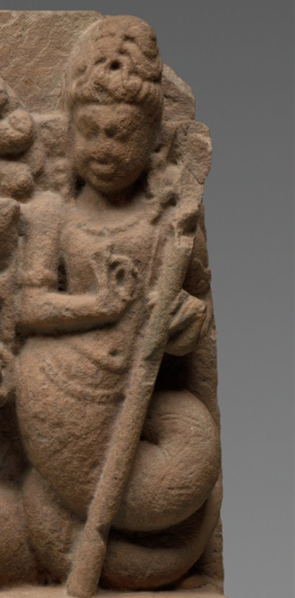

Die Schattentafel trägt das Jahr als Figur: drei Hyperbeln für die Sonnenwenden und die Tagundnachtgleiche, dazu für jede volle Stunde eine Analemma-Schleife. Auf dieses Gerüst werden die Finsternisse gesetzt — genau dorthin, wo die Schattenspitze im Augenblick der Verfinsterung wirklich stand. Oben zieht sich der Drache über die Tafel und trägt die Jahre auf dem Rücken: die Knotenlinie, an der allein Finsternisse geschehen können.


Der Kopf ohne Leib. Rahu ist die Stelle am Himmel, an der die Mondbahn die Ekliptik nach Norden überquert. Er verschlingt, aber er kann nicht behalten: was er greift, fällt aus dem offenen Hals wieder heraus — deshalb ist jede Finsternis endlich.
Astronomisch: Caput Draconis, der Drachenkopf. Er läuft rückwärts durch den Tierkreis und braucht dafür 18,6 Jahre.

Der Leib ohne Kopf. Ketu steht dort, wo der Mond die Ekliptik nach Süden kreuzt — immer genau gegenüber von Rahu. Er trägt eine Fahne und einen Rauchschweif: in Indien gilt er auch als der Herr der Kometen.
Astronomisch: Cauda Draconis, der Drachenschwanz. Kopf und Schweif zusammen sind die Achse, ohne die es keine Finsternis gäbe.
Götter und Asuras hatten die Unsterblichkeit verloren und schlossen einen Pakt: gemeinsam wollten sie den Milchozean quirlen, bis das Amrita daraus hervorginge, der Trank des ewigen Lebens. Als Quirlstab rissen sie den Berg Mandara aus der Erde, als Seil wanden sie Vāsuki, den König der Schlangen, um ihn. Die Götter fassten den Schweif, die Asuras den Kopf. Doch der Berg begann zu sinken, und Vishnu nahm die Gestalt der Schildkröte Kūrma an und trug ihn auf dem Rücken.
Tausend Jahre zogen sie hin und her. Vasuki spie vor Schmerz das Gift Halāhala aus, das die Welt zu verbrennen drohte, bis Shiva es trank und in seiner Kehle hielt — davon ist sie blau. Dann stieg eines nach dem anderen aus dem Ozean: die Kuh Surabhi, der Mond, die Göttin Lakshmi, das Ross Uchchaihshravas — und zuletzt Dhanvantari mit dem Krug voll Amrita.
Vishnu nahm die Gestalt der bezaubernden Mohinī an und übernahm es, den Trank gerecht zu verteilen — mit der Absicht, die Asuras leer ausgehen zu lassen. Einer aber durchschaute das: Svarbhānu setzte sich in Göttergestalt in die Reihe und trank. In diesem Augenblick erkannten ihn Sūrya und Candra, Sonne und Mond, und gaben ein Zeichen. Vishnu schleuderte den Diskus Sudarshana und trennte ihm den Kopf ab.
Doch das Amrita war bereits durch die Kehle geflossen. Beide Hälften blieben unsterblich: der Kopf wurde Rāhu, der Rumpf mit dem Schlangenleib wurde Ketu. Seither jagen sie die beiden Verräter über den Himmel, und wann immer sie Sonne oder Mond erreichen, verschlingen sie sie — bis das Licht durch den offenen Hals wieder herausfällt.
Die Erzählung ist eine genaue Beschreibung: eine Finsternis kann nur eintreten, wenn Sonne oder Mond an einem der beiden Mondknoten stehen, und die beiden Knoten liegen einander immer genau gegenüber — Kopf und Schweif desselben Drachen. Dass beide Hälften unsterblich sind und dennoch nichts festhalten können, ist die mythische Fassung dessen, was die Tafel geometrisch zeigt.
Mahābhārata I,15–17 (Ādi Parva) · Bhāgavata Purāṇa VIII,5–9 · Viṣṇu Purāṇa I,9